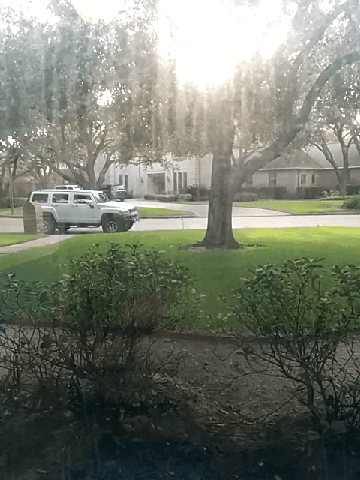
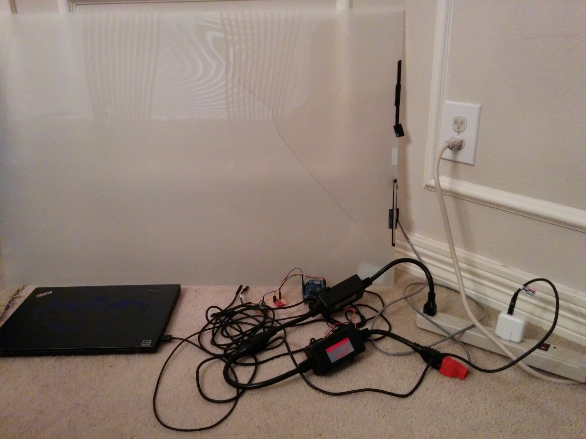
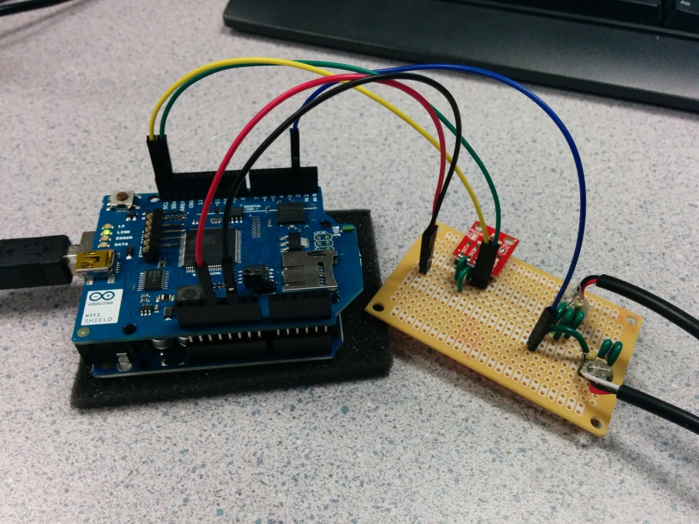
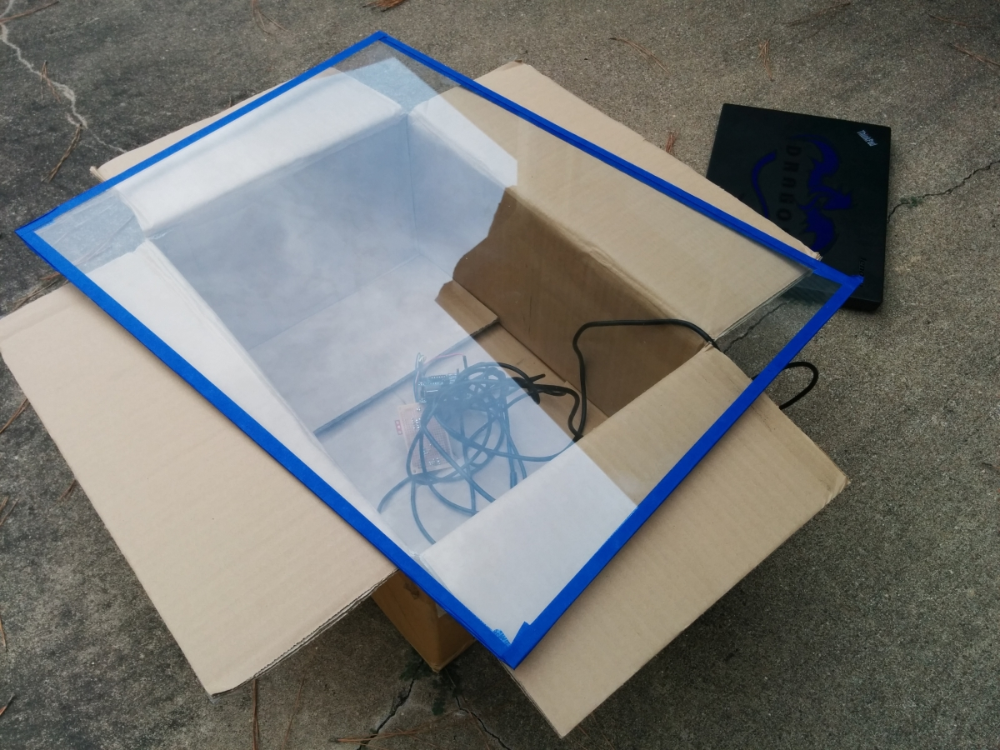

Smart Windows for Dynamic Home Energy Optimization
By Jonathan Zong and Gabriel Valderrama, THINK 2014 Winners
Abstract
Since heat flow management accounts for the majority of home energy use, minimizing the amount of energy wasted hugely impacts energy efficiency. A significant source of heat gain and loss in the home comes from solar radiation incident on windows. Current material solutions for reducing solar heat inefficiency, such as window glazing, suffer because they do not react to changing environmental variables.
We built a dynamic sensor system integrated with an electrochromic window which changes light transmission properties in response to an applied voltage. The system collects ambient temperature and light data in order to make informed decisions on the granular adjustment of the window and thus minimize the amount of solar heat gain opposing the air conditioning temperature management system of the home.
The switchable window film was installed on a portable glass sheet and experimentally tested for comparison against a clear glass setting and a static tint level setting. Empirical results show that the dynamically adjusting window performs efficiently while maintaining acceptable light transmission levels.
In layman's terms, we built a smart window that automatically changes tint in response to the sunlight outside -- like transition lenses for the home. The goal was to minimize the energy the house spends on A/C and heating to keep it at room temperature, while also keeping indoor brightness in a comfortable range. For example, when the sun is shining very intensely, the window dims and lets less heat in so that the inside of the house stays cool and the A/C doesn't have to work as hard; alternatively, if the house is losing heat to the outside, the window will help by letting more sunlight through. We wanted to automate these objectives in the background of daily life, subtly enriching the everyday experience by bringing the windows of your home into the realm of 21st century technology.

Design and Development Process
A detailed project proposal is available in pdf form, along with a system flowchart.
Hardware Sensing

To create the sensor system that reads data to inform the determination of the tint level, we used an Arduino Uno, a WiFi Shield, and temperature and brightness sensors from Sparkfun. Initially we prototyped using a breadboard and jumper wires, before finalizing our design and soldering the components onto a perforated board with hookup wire and header pins to jumper to the Arduino.
Temperature Sensors
The temperature sensors we selected were One Wire Digital Temperature Sensors; having a one-wire interface made the connections straightforward. According to the Bildr tutorial and schematics available through the product page, the sensor is connected to power (red) and ground (black), with a data/signal wire (white) going into digital pin 2 on the Arduino and a 4.7 k? resistor between the power and data wires. Using the example code, we were easily able to get a reading from a single temperature sensor.
Connecting a second temperature sensor required some extra steps. We found experimentally that the data wire for the second sensor must be connected in series to the wire of the first sensor, which is plugged into digital pin 2. The configuration makes more sense when examining the code which gets a temperature reading from the sensor. An instance of a OneWire object works by using the function search(addrArray) to get the next available device and fill the addrArray buffer with its 8 byte address. The queries will get the next sequential device address in series until reset_search() is called. To transfer data with a one-wire device, the reset() function clears the state of the object and the select(addrArray) function specifies which device to communicate with based on the address retrieved by a previous search. More detail can be found in the documentation. Modifying the example code to search twice before resetting the search allows us to query two one-wire temperature sensors connected to the same digital pin.
Brightness Sensor
Our brightness sensor was the TSL2561 Luminosity Sensor. The sensor setup was very straightforward due to the extremely valuable Sparkfun tutorial explaining both the software and hardware configurations. We soldered header pins onto the breakout board for the part and wired them to the conveniently labeled SDA and SCL pins on the Arduino Uno, along with 3v3 and ground.
The example code from the tutorial with the default settings for variables such as gain and integration were sufficient to get adequate readings from the sensor with little modification. Because there is error handling with if blocks in the example light sensor sketch, we left those in place and put the temperature sampling inside the if block so that they would only get data if the light data was successfully sampled. Once all three sensor values are successfully collected, they are sent to a function that sends the data in an HTTP POST request to the processing server.
WiFi Shield
The WiFi Shield easily plugs in like a hat for the Arduino. At first we followed the documentation for WiFiClient and made HTTP requests by writing headers to a client object, but then we realized it would be more efficient to switch to a HTTPClient wrapper library. The /data/:id endpoint on our heroku deployment of the processing server accepts the two temperature and one brightness sensor readings as POST data. Examples are in the github readme. The WiFi shield is also responsible for querying /window/:id with a GET request to retrieve the appropriate tint level for the window. The getFromServer(int id) function retrieves and parses the value as a float in the interval [0.0, 1.0] interpreted as a percentage of the maximum voltage to apply.
Electrochromic Material
Our electrochromic film was ordered from SmartTint (although we do not recommend them for future projects) and applied to a glass sheet from Lowe's. The most technically challenging part of our hardware was figuring out how to change the applied voltage to adjust the window. Arduino works in low voltage DC, but the window is in high (up to 110v) AC connected to the mains power. Alternating current is basically magic so most internet resources were jargon heavy and not immediately practical.
We ultimately found that the safest option was to use a combination of the PowerSSR and ZeroCross tail products, which do not expose any dangerous AC voltages to the user. The canonical example use case for AC dimming is to dim lights. By reading about how these modules worked, we actually learned a lot about how AC/DC interfaces function; low voltage should never physically touch (conduct) high voltage, and the signals are encoded from electricity to light for optical transmission across a bridge.
The Arduino can be wired to the terminals on the side of the tails. ZeroCross terminal C connects to digital pin 2 with a 10 k? resistor to 5V on the Arduino, and terminal E connects to ground. PowerSSR terminal +in connects to digital pin 4, and terminal -in connects to ground. On the AC side, the ZeroCross tail plugs into the wall power and the PowerSSR tail plugs into the ZeroCross tail. The window can then be plugged into the PowerSSR tail. The sample code on the ZeroCross Tail webpage demonstrates how to adjust the dim level with the Arduino once everything is connected.

Networked Automation
The web processing server is a node.js application deployed on a free Heroku cluster. We use the PostgreSQL database to store sensor data for each window (by window id) and the express framework to set up simple routing for API endpoints for the Arduino requests. As described previously in the WiFi Shield section, two endpoints provide basic update and retrieval capability with the Arduino.
To calculate a value to retrieve for the tint setting, the node server implements the basic algorithm described in our project proposal. On a qualitative level, the algorithm is the following: if the outside temperature is greater than the inside temperature, increase tint; otherwise, if the outside temperature is less than the inside temperature, decrease tint. The quantity by which the tint is changed is described by a function of the absolute difference in temperature as well as the acceptable brightness threshold defined by the user.
As previously described, the WiFi Shield retrieves from the server a value between 0.0 and 1.0 which represents a percentage of tint. In practice, the percentage is multipled and rounded to produce an integer called dim between 0 and 128, with 128 representing total dimming. The default window state is dimmed because it takes voltage to align the particles in the material to let light through; therefore, there is an inverse proportional correlation between the percentage of the scale that dim represents and the amount of voltage applied to the window, and a direct correlation to how much it is tinted.
Materials and Cost Breakdown
| Item | Amount | Cost |
| Arduino Uno R3 | 1 | $24.95 |
| Temperature Sensor DS18B20 | 2 | $19.90 |
| Luminosity Sensor TSL2561 | 1 | $5.95 |
| Arduino WiFi Shield | 1 | $84.95 |
| ZeroCross Tail | 1 | $17.99 |
| PowerSSR Tail | 1 | $19.99 |
| M/F Jumper Wire Pack | 2 | $49.90 |
| Resistor Kit | 1 | $7.95 |
| Breakaway Header Pin Row | 1 | $1.50 |
| Breadboard | 1 | $4.95 |
| Hookup Wire Spool | 1 | $8.49 |
| Wire Stripping Tool | 1 | $7.99 |
| Perfboard | 1 | $3.99 |
| Soldering Iron | 1 | - |
| Solder Spool | 1 | - |
| Electrochromic Film | 1 | $793 |
| Total: | $1051.50 |
Testing
To measure and analyze the effectiveness of the Smart Windows system, we designed an experiment that compared the temperature fluctuation of a controlled environment using regular glass, statically tinted glass, and our dynamic tint system. We fitted an insulated cardboard box with a temperature sensor. We then covered the only open face of the box with the type of window being tested and set it outside in natural sunlight, all in the same exposed area. We recorded the change in temperature and brightness inside the box at intervals over a 30 minute time span. We repeated the experiment during times with comparable weather conditions (i.e. bright daylight with minimal cloud coverage), determining the characteristic tradeoff for each system of absolute temperature change with average brightness over time.

Results
For each trial, we gathered data on brightness and temperature inside the box environments. The normal glass was most susceptible to changes in brightness, and also allowed the most heat gain into the box environment. The full static tinted glass reduced the effect of outside brightness changes on the fluctuation of the inside brightness; however, it also resulted in the lowest visibility. The dynamic tinting system, given an algorithm with bias toward maintaining a indoor brightness range at acceptable levels with low variance, successfully performed better than untinted glass with 31.78% decrease in average change in temperature over time. Furthermore, the end behavior of the graphs of dynamically and statically tinted glass suggest that they are growing at a similar order which is smaller than the normal glass.
Conclusion
From our data we conclude that the Smart Window system, by leveraging a dynamic tinting mechanism that responds to environmental circumstances, performs successfully from an energy efficiency perspective while maintaining acceptable indoor brightness. The project reaffirms the potential gains from coupling the recent technology of electrochromic glass with the automation and networked control mechanisms of a programmable world of physical objects.
Possible sources of error include imperfect insulation in the box environment and variations in weather that affect the radiant power incident on the glass. Potential sources of improvement can be found in the sophistication of the tint level algorithm, adjustments in the update polling rate of the window, and the time interval for which the experiment is run.
The future of the Smart Windows concept could see it potentially interfacing with other networked systems in a home, or integrating weather data from the internet based on geolocation and solar tracking to improve the context awareness of the tint selection. Other potential applications of switchable glass that we are interested in include privacy oriented motion sensing to selectively clear windows, interfacing with biometric sensing to optimize the environment for focus, time based switching, and more. By making objects in physical space programmable, we create new possibilities that can enrich the details of everday experiences. We are excited to explore the idea behind the technology in the hope that it will someday improve lives at a widespread scale.
Acknowledgements
Our deepest thanks go to the following for providing the guidance and resources we needed to make our project vision come to fruition, making our visit to MIT possible, and inspiring us to become better scientists and makers.
- MIT THINK Team, especially Somak Das and Daniel Lerner, for their support and feedback
- THINK Sponsors: Chevron, Schlumberger, Thomson Reuters
- The MIT Community, including Prof. Madden, Dean Freeman, and our hosts from Media Lab, Game Lab, Nuclear Reactor, CSAIL, Product Design Lab, and Techfair
- Next House 3W, for being amazing hosts and friends